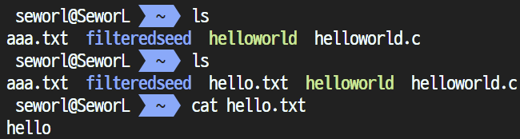
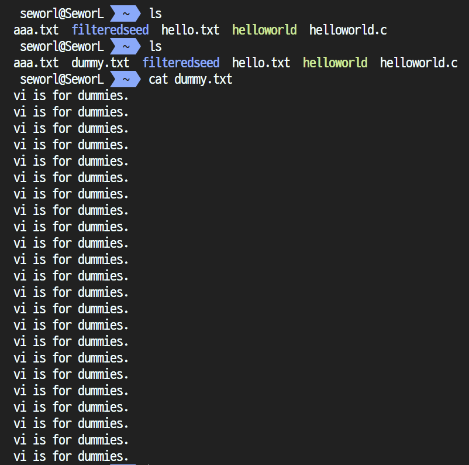
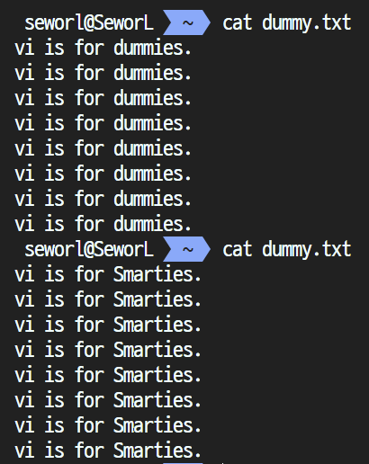
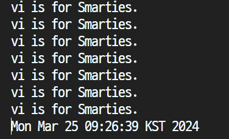
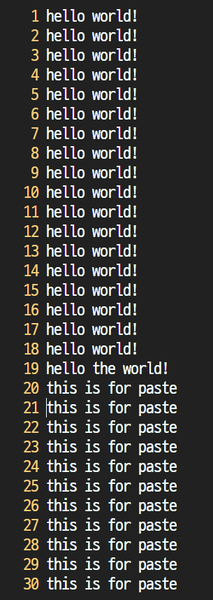
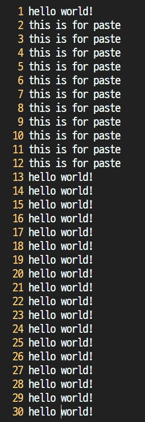
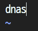
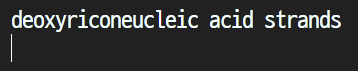
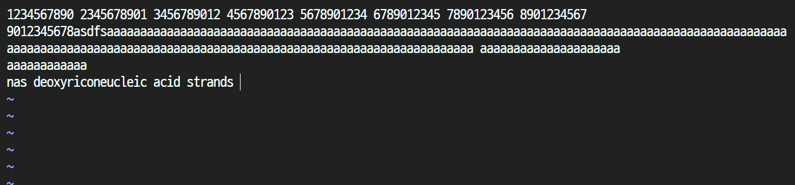

School ID: 202355517 Name: 권민규
Solutions from the following questions can be foun out by googling. Write down your own solutions. If your solutions looks like copying solutions available at the Internet, you will get zero point without any notification.
Your friend comes to you with an odd request. All she wants you to do is make a simple text file containing the word hello. She asks that you name the file hello.txt. How would you do this using vi? (Remember to save and quit.)
순서대로 입력해준다.
$ vi hello.txt # vi로 hello.txt 파일을 열고, 없으면 새로 생성하여 연다.
i # 삽입 모드로 전환한다.
hello # hello를 입력한다.
<ESC> # 기본 모드로 돌아간다.
:wq! # 명령모드를 실행한 뒤(:) 저장하고(w) 종료한다(q!).
실행 후 파일이 추가됨을 확인할 수 있다.

Bad move. Now your friend knows you can use vi, and she wants you to make a longer text file named dummy.txt which contains the sentence "vi is for dummies." one per line for 23 lines. What is the most effecient way to do this with vi?
순서대로 입력해준다.
$ vi dummy.txt # vi로 dummy.txt 파일을 열고, 없으면 새로 생성하여 연다.
i # 삽입 모드로 전환한다.
vi is for dummies. # vi is for dummies.를 입력한다.
<ESC> # 기본 모드로 돌아간다.
yy22p # 현재 줄을 복사(yy)하고, 22번(22) 붙여넣어(p) 총 23줄을 생성한다.
:wq! # 명령모드를 실행한 뒤(:) 저장하고(w) 종료한다(q!).
실행 후 파일이 추가됨을 확인할 수 있다.

Your annoying friend is back. She has seen how efficient vi is, and now wants you to replace all occurrences of the word dummies with the word Smarties in the file dummy.txt. How would you do this with vi?
순서대로 입력해준다.
$ vi dummy.txt # vi로 생성했던 dummy.txt 파일을 연다.
:1,$s/dummies/Smarties/g # 명령모드를 실행한 뒤(:) 커서를 파일의 맨 처음부터(1,) 맨 끝까지($) dummies를 Smarties로 바꾼다(s/duumies/Smarties/g).
:wq! # 명령모드를 실행한 뒤(:) 저장하고(w) 종료한다(q!).
실행 후 파일이 수정됨을 확인할 수 있다. (화면에 담기 위해 줄 수를 조금 줄였다.)

She's sulking because her own editor seems useless now. Unfortunately, you've wasted so much time showing off that you've forgotten you have a report to finish. You've also forgotten to wear your watch today, and you need to make this very important deadline. Quickly, how do you access the system's correct time via the UNIX date command without leaving vi?
:r!date # 현재 커서에(r) 시스템의 현재시간(date)을 받아 출력한다(!).
실행 후 현재 시간이 출력됨을 확인할 수 있다.

문서에 사용할 필요가 없는 경우 dd 등으로 다시 삭제하면 된다.
Your friend is making it hard for you to concentrate. At one point, you decide to move lines 20 through 30 inclusive to the point between line 1 and line 2, so you cut them out of the text by moving to line 20 and typing 11dd. Before you can paste them to the desired location, however, your friend points out that you have an extra "the" in one of your lines, so you delete it with dw to shut her up. Oops. Now how do you recover those 11 lines you had previously cut and then paste them to the desired location at the top of your file?
:2u # 명령모드를 실행한 뒤(:) 2번째(2) 전 상태로 되돌린다(u).
그 뒤 dw를 먼저 실행한 후 11dd를 실행하는 등 순서를 조정하여 다시 진행하면 된다.
전후 비교
 
Your friend finally found something more fun than pestering you. Candy, While she is out looking for a vending machine, you notice that you have been repeatedly typing the phrase, "deoxyribonucleic acid" (without the quotes) because your mean instructor will not allow students to abbreviate. How would you arrange it so that whenever you type the word "dnas" (without the quotes) in insert mode, it immediately expands to the correct phrase?
.exrc 파일을 생성하여 abbreviation을 추가한다.
$ vi ~/.exrc # vi로 .exrc 파일을 연다.
i # 삽입 모드로 전환한다.
ab dnas deoxyribonucleic acid strands # dnas를 입력하면 deoxyribonucleic acid strands로 바꾼다.
<ESC> # 기본 모드로 돌아간다.
:wq! # 명령모드를 실행한 뒤(:) 저장하고(w) 종료한다(q!).
이후 vi에서 dnas를 입력하면 deoxyribonucleic acid strands로 바뀌는 것을 확인할 수 있다.
 
She's still out looking for candy. You are feeling better now that you don't have to keep typing that long phrase over and over again. But now you want the text to "wrap" for you whenever it goes beyond column 72, and you don't want to have to see it coming each time and manually hit Enter yourself. You also need to use the restroom, and you have to log out each time you leave this room. Quickly, how do you set vi to wrap the text for you and then make both this setting and your "dnas" macro from the previous question permanent?
.exrc 파일을 생성하여 설정을 추가한다.
$ vi ~/.exrc # vi로 .exrc 파일을 연다.
i # 삽입 모드로 전환한다.
set wm=72 # 텍스트가 72칸을 넘어가면 자동으로 줄바꿈한다.
ab dnas deoxyribonucleic acid strands # dnas를 입력하면 deoxyribonucleic acid strands로 바꾼다.
<ESC> # 기본 모드로 돌아간다.
:wq! # 명령모드를 실행한 뒤(:) 저장하고(w) 종료한다(q!).
이후 vi에서 dnas를 입력하면 deoxyribonucleic acid strands로 바뀌고, 72칸을 넘어가면 자동으로 줄바꿈되는 것을 확인할 수 있다.

공백을 기준으로 가로 72칸을 넘어가면 자동으로 줄바꿈되는 것을 확인할 수 있다.